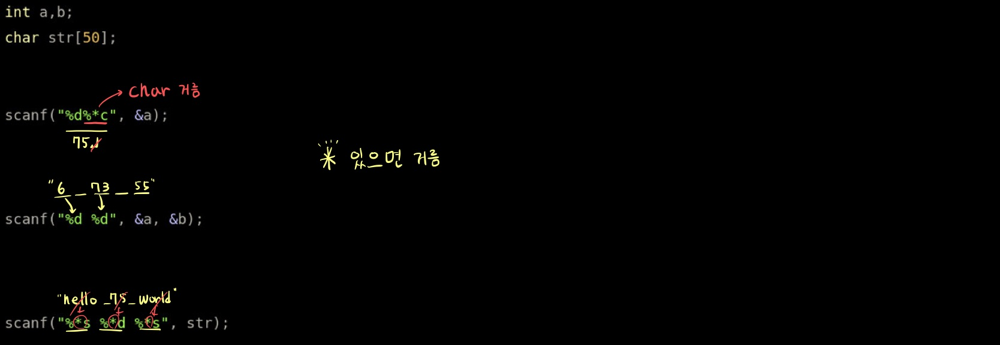

시험에서 입출력, STL
scanf(), printf()
특정 자료형 거르기

특정 갯수만큼만 받기
scanf("%1d", &a);
- %1d 와 같이 중간에 숫자를 넣은 만큼 입력을 받는다.
- 12345 입력 시, 1 2 3 4 5 따로 받을 수 있다.
scanf("%5s", str);
- %5s 와 같이 string도 중간에 숫자를 넣은 만큼 입력을 받는다.
- “hello world” » “%3s” » “hel”
scanf 로 끝까지 받기
- scanf의 리턴 값은 성공적으로 입력 받은 인자 개수이다.
- 파일의 끝까지 받아야 하는 경우
while( scanf("%d %d", &a, &b) == 2);
한줄 입력
- scanf(), cin »으로는 한 줄입력 불가!
fgets(s, 100, stdin); "fgets()는 줄 바꿈까지 입력 받음!! 주의!!"
getline(cin, s);